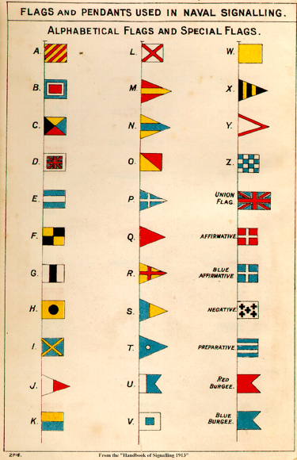

all posts >> Mike wants a re-brand
Branding is about trust
Feb 07, 2015
People like things that inspire
When your brand inspires people, it makes them feel good. It's like an endorphin and if you help them get it, then they'll want to do business with you.
Re: Michael
When I think of what Mike's California brand, I think how nice would it be to receive a letter that's coming from the real Pacific Ocean. I think he can embrace that in his branding.
Interest is free advertising
Work is usually tedious, boring, or otherwise uninteresting for the vast majority of people. If you are interesting, you will capture attention and thus have a moment to promote who you are. I can't do business with people who I don't know or remember.
Re: Michael
I went to bed with these last messages from Mike;
I like the generic and symbolism of a Lantern. Would prefer a hipper Lantrn or Rangr but both are taken.
The word 'signal' came to mind. I like the way it sounds and looks so I looked it up in the dictionary.
A gesture, action, or sound that is used to convey information or instructions, typically by prearrangement between the parties concerned:
Feel accurate to the core of what Mike would be hired to do. Then, I looked at signal flags and sure enought, it's locally applicable

You will be sending emails, websites, invoices, and other various points of contact. Will those be recognized or lost in the crowd of noise?
Are you easy to talk about?
Strangers start with chit-chat. Chit chat is the beginning of getting to know one another. Does your logo allow for interesting chit-chat? If Mike sends out the logo above, people could ask What's the 5 for? This is the chance for Mike to engage with a thoughtful conversation and let the potential customer get to know Mike better.
What are the messages people receive before they do business. A name is something that has to fit in many different ways. What does it sound like, look like, and where does it fit in the alphabet. What are ways it could sound bad, and what could people think you said. Then, how will it be displayed? What's the logo? why was that logo picked?
Are you easy to recommend?
Nobody starts a music recommendation with 'this is bad but you should buy it.' As soon as you recommend a music album, that album will be tied to you. Same goes with business recommendations. If you want to get recommended then you better make that person look good by looking good yourself. People show off pretty things and you better be pretty.
If word of mouth is the majority of business people receive, then think how will other people say your name. Will they be proud to represent you? So, My mind goes to a few different topics when being given this information. A brand has to be interesting, authentic, inspiring, and cohesive.
More from
Mike wants a re-brand
Boulder doesn't have palm trees.
People work with people they like and trust. So how can branding help build like and trust?
With small business branding, how close is the name to you, the founder. The human subconscious has the ability to feel out a situation and know if it's sketchy...